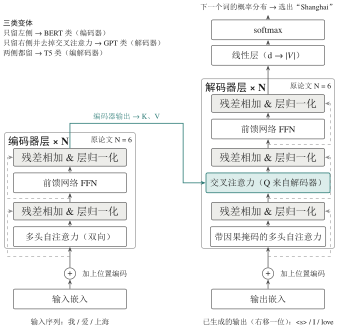
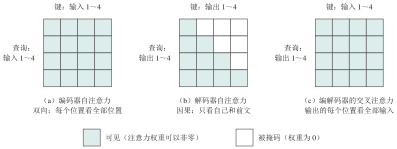

2.5 三类架构：同一套 Transformer 的三种用法
几乎所有现代大模型都建立在 Transformer 之上，为什么还会分出 BERT、GPT、T5 这几类？区别在于用了 Transformer 的哪一部分、注意力能看到哪些位置、预训练时让模型做什么题。本节先给出 2017 年的标准 Transformer 全貌——编码器和解码器两个栈，由交叉注意力相连；再说明只用编码器（双向注意力，擅长理解）、只用解码器（因果注意力，擅长生成，今天的主流）和两者都用（擅长“输入一段、输出另一段”）三类模型的差异，以及按应用领域划分的垂直领域模型。
2.5.1 标准 Transformer
Transformer 由 Google 的瓦斯瓦尼（Ashish Vaswani）等人在 2017 年的论文《Attention Is All You Need》中提出，最初用于机器翻译[15]。它完全去掉了循环结构，只用注意力建模序列中任意两个位置之间的关系，带来两个决定性的好处：所有位置可以并行计算，能充分利用 GPU；任意两个词元之间的计算路径长度都是 1，信息和梯度不必像 RNN 那样逐步传递，长距离依赖更容易学到（顺序信息则要靠位置编码补充）。
标准 Transformer 由编码器和解码器两个栈组成（图 2-10），原论文中各 6 层，隐藏维度 \(d=512\)，8 个头，FFN 中间维度 \(d_{\mathrm{ff}}=2048\)。以把“我爱上海”翻译成英文为例：
编码器一次读入整个源句。每层由双向多头自注意力和 FFN 组成，每个位置都能看到源句的全部位置，输出源句每个词元的上下文表示。
解码器逐词生成译文，输入是已生成的部分（右移一位，以起始符开头）。每层有三个子层：带因果掩码的多头自注意力，只看已生成的部分；交叉注意力，它的查询来自解码器，键和值来自编码器的输出，用来把生成过程“对齐”到源句上；最后是 FFN。
解码器顶部是线性层和 softmax，输出下一个词的概率分布（第 2.3.5 小节）。
每个子层都套着残差连接和层归一化，原论文的写法是 \(\operatorname{LayerNorm}(\boldsymbol{x}+\operatorname{Sublayer}(\boldsymbol{x}))\)，即归一化放在残差相加之后（后置归一化）。

图 2-10 标准 Transformer 结构（据文献 [15]重绘）。信息自下而上流动；虚线为残差连接，把子层的输入直接加到输出上；青绿箭头表示编码器输出作为解码器交叉注意力的键和值
正弦位置编码 原论文给第 \(pos\) 个位置的第 \(2i\) 和 \(2i+1\) 维分别加上 \[\mathrm{PE}_{(pos,\,2i)} = \sin\Bigl(\frac{pos}{10000^{2i/d}}\Bigr),\qquad \mathrm{PE}_{(pos,\,2i+1)} = \cos\Bigl(\frac{pos}{10000^{2i/d}}\Bigr). \tag{2-23}\] 不同维度对应不同频率的正弦波，低维变化快、高维变化慢，组合起来能唯一标识每个位置；对任意固定的距离 \(k\)，\(\mathrm{PE}_{pos+k}\) 都可以写成 \(\mathrm{PE}_{pos}\) 的一个线性变换（每对正弦、余弦维度做一次旋转），便于模型学习相对位置。
之后的改进 2017 年以来，Transformer 的骨架没有大变，细节则持续改进：把归一化移到子层之前（Pre-LN，式 （2-14）），并换成计算更简单的 RMSNorm[38]；用旋转位置编码 RoPE 替代正弦编码；FFN 的激活函数从 ReLU 换成 SwiGLU[39]；用分组查询注意力（GQA，把查询头分成若干组，同一组内的查询头共用一组键和值）减少推理时 KV 缓存的显存占用[40]；用混合专家（MoE）把 FFN 换成多个“专家”网络，每个词元只经过其中少数几个，使总参数量很大，而每个词元的计算量远小于同等总参数量的稠密模型[41]。LLaMA、Qwen、DeepSeek 等系列各自采用了其中一部分，具体组合随版本而异。
2.5.2 编码器模型
编码器模型只保留 Transformer 的编码器部分，注意力是双向的：每个词元都能同时看到左右两侧的上下文。它擅长“理解”，不擅长“生成”。
代表模型是 Google 2018 年提出的 BERT（Bidirectional Encoder Representations from Transformers）[18]。双向注意力让“预测下一个词”失去意义（下一个词已经能被看到），所以 BERT 改用掩码语言建模（Masked Language Modeling，MLM）：随机选中 15% 的词元，让模型根据上下文预测它们原来是什么。例如输入“上海是中国的 [MASK] 大城市”，目标是预测“第一”。被选中的词元中，80% 替换为 [MASK]，10% 替换为随机词元，10% 保持不变。损失在全部被选中的位置上计算。之所以不把它们全部替换为 [MASK]，是因为微调和使用时输入里没有 [MASK]；如果需要预测的位置总是 [MASK]，模型就可能只在看到 [MASK] 时才认真利用上下文，训练与使用之间出现不一致。BERT 还使用下一句预测（NSP）任务，判断两个句子在原文中是否相邻。
编码器模型通常用于文本分类、情感分析、命名实体识别、抽取式问答，以及生成句向量用于语义检索；今天 RAG 系统中的向量嵌入模型和重排序模型，大多仍是编码器架构（第 5.2 节、第 5.4 节）。在 BERT 基础上改进的代表模型有：
RoBERTa（Facebook，2019）：去掉 NSP，使用动态掩码、更多数据、更大批次和更长训练，说明原版 BERT“训练不足”[42]；
ALBERT（Google，2019）：跨层共享参数、分解词嵌入矩阵，用更少的参数达到相近效果；
DistilBERT（Hugging Face，2019）：用知识蒸馏把 BERT 缩小 40%，推理快 60%，保留约 97% 的语言理解能力。
2.5.3 解码器模型
解码器模型只保留带因果掩码的解码器，并去掉交叉注意力（没有编码器可看了），训练目标就是第 2.2.1 小节的下一个词元预测。生成时一次只产生一个词元，接回输入再生成下一个，即自回归生成；第 2.3 节描述的正是这类模型的计算过程。代表模型有 OpenAI 的 GPT（Generative Pre-trained Transformer）系列、Google 的 PaLM、BigScience 的 BLOOM、DeepMind 的 Chinchilla、Meta 的 LLaMA，以及国内的 Qwen、DeepSeek 等。它们可用于对话、写作、代码生成、机器翻译、多语言文本生成等几乎所有任务。
为什么今天的主流大模型几乎都是解码器架构？主要有四个原因：
2.5.4 编解码器模型
编解码器模型保留完整的标准 Transformer：编码器用双向注意力从输入中提取有用的表示，解码器通过交叉注意力读取这些表示，以此辅助并约束生成。它天然适合“输入一段、输出另一段”的任务，如翻译和摘要；在多模态领域也很常见，典型应用是视觉语言预训练（VLP）——编码器处理图像，解码器生成描述文字。代表模型有：
T5（Google，2019）：提出“一切都是文本到文本”，把分类、翻译、摘要统一为“输入文本、输出文本”；预训练任务是片段破坏（span corruption）——把连续的几个词元替换为一个哨兵符，让解码器还原[44]；
BART（Facebook，2019）：用掩码、删除、打乱句序等多种方式破坏输入，训练模型还原原文，在摘要任务上表现突出[45]；
mT5（Google，2020）：T5 的多语言版本，覆盖 101 种语言；
UL2（Google，2022）：混合多种去噪目标，试图统一理解类和生成类任务；
Flan-T5（Google，2022）：在 T5 上用上千个任务做指令微调，显著提升了零样本能力。
2.5.5 垂直领域模型
垂直领域模型是为特定行业训练或调优的大模型。它们在架构上大多仍是解码器，区别在于数据和训练方式：一是在预训练阶段就混入大量领域数据，从头训练；二是在通用模型上用领域数据继续预训练或微调。表 2-9 列出了几个代表。
表 2-9 垂直领域模型举例
| 模型 | 领域 | 机构与年份 | 特点 |
|---|---|---|---|
| Med-PaLM | 医疗 | Google，2022 | 在 Flan-PaLM 上做指令提示微调，MedQA 准确率 67.6%，首次超过及格线[46] |
| Med-PaLM 2 | 医疗 | Google，2023 | MedQA 准确率 86.5%，接近专家水平 |
| ClinicalGPT | 临床医疗 | 2023 | 用病历、医患对话等临床数据训练的中文医疗模型 |
| BloombergGPT | 金融 | 彭博，2023 | 500 亿参数，用约 3630 亿词元金融数据加 3450 亿词元通用数据从头训练[47] |
| FinGPT | 金融 | 开源社区，2023 | 在开源基座上用 LoRA（低秩适配，只训练少量新增参数）等低成本微调快速适配金融数据 |
| Galactica | 科学文献 | Meta，2022 | 在论文、公式、分子序列上训练；公开演示因编造参考文献等问题三天后下线 |
| Minerva | 数学 | Google，2022 | 在 PaLM 上用数学网页和 arXiv 论文继续训练，擅长定量推理 |
垂直模型的前景并非没有争议。诺里（Harsha Nori）等人（2023）发现，只靠提示工程、不做领域微调的通用模型 GPT-4，在其设计的提示策略下，在 MedQA 等医学评测上已超过专门微调的 Med-PaLM 2[48]。这呼应了第 2.2.7 小节“广泛性似乎战胜了专业性”。当前更常见的做法，是在强大的通用模型上叠加领域微调和 RAG，而不是为每个行业从头训练一个模型。
2.5.6 三类架构对比
三类架构的根本差别在于注意力能看到哪些位置。图 2-11 用 4 个词元的注意力矩阵画出了这一点，表 2-10 做了全面对比。

图 2-11 三类架构的注意力可见范围（以 4 个词元为例）。BERT 类只用（a）；GPT 类只用（b）；T5 类的编码器用（a），解码器先用（b）再用（c）
表 2-10 三类 Transformer 架构对比
| 编码器（BERT 类） | 解码器（GPT 类） | 编解码器（T5 类） | |
|---|---|---|---|
| 注意力方向 | 双向 | 单向（因果掩码） | 编码端双向，解码端单向 + 交叉注意力 |
| 预训练目标 | 掩码语言建模 | 下一个词元预测 | 去噪、片段还原 |
| 核心能力 | 理解 | 生成 | 条件生成（输入 \(\to\) 输出） |
| 典型任务 | 分类、实体识别、抽取式问答、向量检索 | 对话、写作、代码、几乎所有通用任务 | 翻译、摘要、视觉语言任务 |
| 代表模型 | BERT、RoBERTa、ALBERT、DistilBERT | GPT、PaLM、BLOOM、LLaMA、DeepSeek | T5、BART、mT5、UL2、Flan-T5 |
辨析
“编码器/解码器”是网络结构，“编码/解码”还常指运行过程，两者不要混淆。解码器模型（GPT 类）处理用户输入的那一步叫“预填充”，并不需要编码器；编码器模型（BERT 类）也可以接一个简单的分类头输出结果，并不需要解码器。判断一个模型属于哪一类，看它的注意力掩码和是否有交叉注意力，而不是看它“做理解还是做生成”。